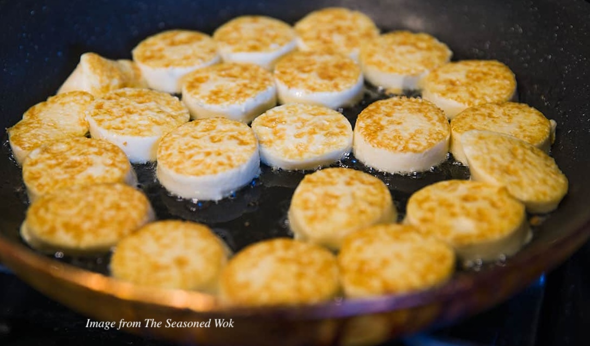

Egg Tofu Recipe

Description
Egg tofu is a simple and warming Chinese dish that reminds me of home. I have fond memories of weeknight dinners where my mother would set a plate of freshly pan-fried egg tofu on the table alongside a platter of sauce-laden vegetables and bowls of white rice. Now you can learn how to prepare and enjoy this comforting dish with your loved ones too!
Ingredients
- 1 tube of egg tofu - this is usually sold in Asian supermarkets
- 1 large egg
- 1 Tbsp of canola oil
- 1 Tbsp of corn starch
- 1 tsp of soy sauce
- 1/2 tsp of salt
- 1/2 tsp of pepper
Steps
- Cut open the tube of egg tofu. Discard the packaging.
- Slice the egg tofu into 1/2 inch rounds. Lay the slices on a towel to drain the moisture from them. Let them sit for at least five minutes.
- Crack the egg into a small bowl. Add the salt and pepper and beat the mixture well.
- Add the oil into a 12-inch pan and begin heating it over a low-medium flame.
- Sprinkle cornstarch on one side of each tofu slice.
- Once the oil in the pan is heated, increase the flame to medium-high, add the tofu slices, corn-starched side down, and pan fry them until that side is golden brown. Then flip the slices.
- When the other side of the tofu begins turning golden brown, add the egg-salt-pepper mixture to the pan.
- Once the egg mixture has been cooked to your preference, turn off the stove and add soy sauce to taste.
- Serve immediately, preferably with rice, and enjoy!